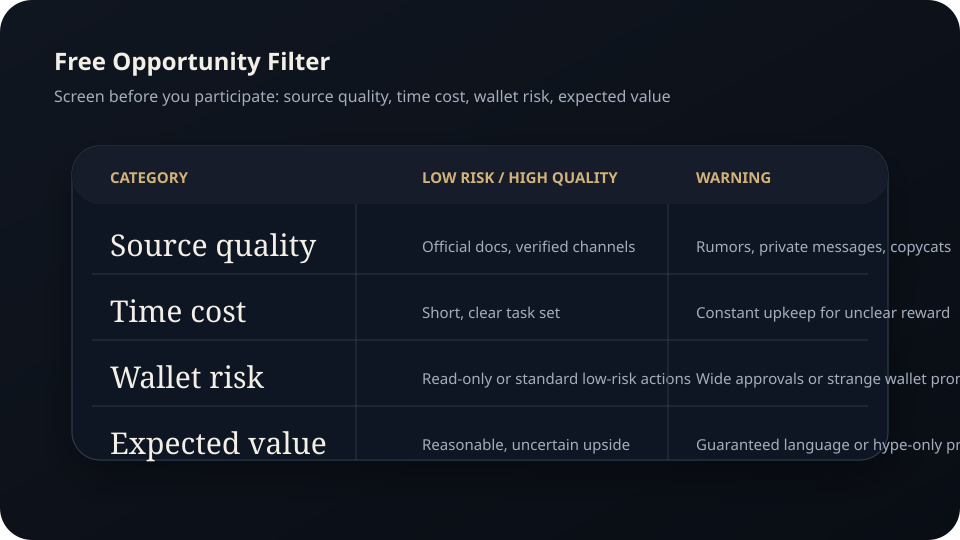
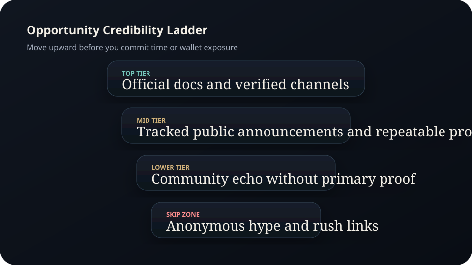
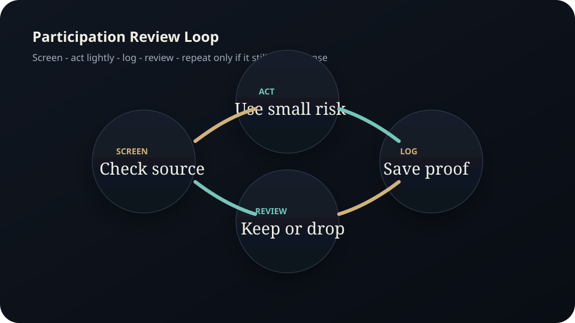

Full Edition
Free Opportunities Guide.
A full beginner edition on quests, points systems, public participation programs, credibility screening, time allocation, wallet segmentation, and fraud filtering.
Disclaimer Page
Important educational and legal notice
So-called free opportunities can still consume time, expose wallets to risk, and lead users into scams or low-quality projects. This guide is educational only.
- Madeesh P. Nissanka is not a financial advisor, legal adviser, marketing agent, or tax professional.
- This guide does not guarantee points, rewards, airdrops, token allocations, or profit.
- No campaign, quest, or participation system should be treated as guaranteed compensation.
- Readers must verify official project channels and documents before connecting wallets or submitting data.
- Time is also a resource. A free opportunity can still be a bad trade if the risk, effort, or credibility is poor.
- Readers are responsible for their own due diligence, wallet safety, and record-keeping.
Contents
Full chapter map
The key theme is filtering first and acting second.
What counts as free
Quests, points systems, testnets, community tasks, and public campaigns.
Credibility screening
Official sources, verified channels, and early red flags.
Effort scoring
Time, complexity, wallet risk, and probable value.
Tracking system
Logs, screenshots, wallets, dates, and follow-up windows.
Scam filtering
Why free offers are often used as bait.
Review and exit
When to keep participating and when to stop.
Chapter 1
Free opportunities are usually exchanges of time, access, or data
A free opportunity often means there is no direct cash cost at the start. It does not mean the opportunity is costless. Users spend attention, time, wallet activity, and sometimes reputation. In some cases they also expose themselves to poor-quality or deceptive systems.
The strongest beginner mindset is to treat every opportunity like a small due-diligence project. Ask what the user is giving up, what they are actually being asked to do, and whether the source is credible enough to be worth attention.
Chapter 2
Start with source quality, not with reward fantasy
The first screen is the source. Is the campaign linked from an official site? Is it confirmed by verified public channels? Is the task clear? Are the wallet requests and permissions reasonable? If the answer is unclear, the opportunity moves lower on the list.
Chapter 3
Use an effort score before you participate
A simple model is enough. Score the opportunity across four categories: source quality, time cost, wallet risk, and expected value. If a campaign scores poorly on the first three categories, it does not deserve a large time commitment even if social media is excited about it.
- Source quality: official, semi-official, or rumor-based?
- Time cost: minutes, hours, or ongoing maintenance?
- Wallet risk: read-only task, standard transaction, or broad approvals?
- Potential value: clear, uncertain, or mostly speculative?

Figure A. A simple scorecard helps separate credible opportunities from noise.
Chapter 4
Documentation is the difference between signal and noise
Every participation system should have a log. Record the project, date, wallet used, tasks completed, screenshots saved, and any follow-up date when results might matter. This reduces duplicate effort and helps identify which categories of activity are worth continuing.
For campaigns involving wallet interaction, use a dedicated wallet where practical. That separation protects higher-value holdings and keeps records cleaner.

Figure B. Source quality should be ranked before any opportunity is allowed to consume time or wallet access.

Figure C. Free opportunities still need a screen-log-review loop if they are going to be worth repeating.
Chapter 5
Fraudsters understand that “free” lowers a person’s guard
Fake rewards, fake claim pages, fake point dashboards, and fake community tasks are common because they exploit urgency and hope. A user who would never wire money to a stranger might still connect a wallet to claim something “free.”
- Never trust private-message links for claims or eligibility checks.
- Verify official channels independently before acting.
- Question any process that asks for unusual permissions or rushed behavior.
- If the only proof is hype, skip it.
Chapter 6
Review cycles prevent low-value participation from becoming a habit
Not every campaign deserves a second visit. Review your logs every few weeks and ask which categories produced credible follow-up, which consumed too much effort, and which introduced unnecessary wallet risk. The goal is not maximum activity. The goal is better selection.
Research Notes
Source foundation and further reading
External facts were paraphrased and checked against official or public-interest sources available at drafting time. Before public launch, re-check any project-specific claims against current official documentation and verified public channels.
Publication Note
End of full edition
This manual is published as part of the Madeesh P. Nissanka educational library and is intended as a practical guide for structured participation and cleaner filtering.
Educational only. Not financial advice.
Madeesh P. Nissanka